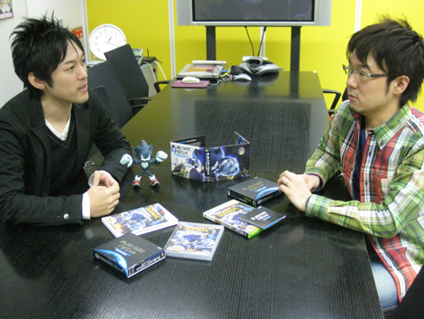
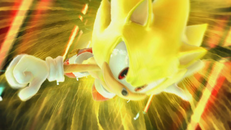
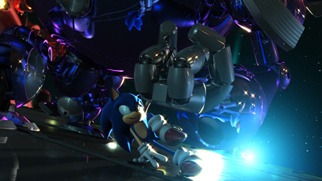
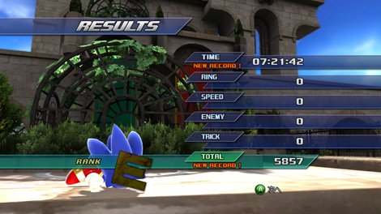

第８回 橋本ｘ大谷 サウンド対談 その１ 「オーケストラ」
2009年02月23日
みなさんこんにちは。
『ソニック ワールドアドベンチャー（ＳＷＡ）』 ディレクターの橋本です。
今回から何回かに分けて、ＳＷＡサウンドディレクターの大谷智哉氏と一緒に
ＳＷＡのサウンドに関してのお話を対談形式でお届けしようかと思います。
では早速まいりましょう！
==================================================

大谷 ： タイミング的には、Wii版とPS3,Xbox360版の間をつなぐ形でオリジナルサウンドトラックが発売となりましたが、せっかくなので『ソニック ワールドアドベンチャー』のサウンド制作過程におけるあんな事や、こんな事など振り返ってみましょうか？
橋本 ： そうですね。プロジェクトの最初の方から振り返りますか。
大谷 ： そうしましょう。僕がプロジェクトに参加したのは2007年の夏頃でしたね。
橋本 ： ええ。それくらいの時期に話を持っていったと思います。
大谷 ： 最初の打ち合わせの時のことはよく覚えてますよ。
橋本 ： え、どんな風に印象がのこってますか？
大谷 ： 新しいソニックはどんな企画なのか、かなり楽しみにしていた部分もあるんですが、橋本さんから何が飛び出してくるかわからない不安もあったので…（笑）
橋本 ： そんなこわがらないでください！（笑）
……で、ふたをあけてみてどうでした？
大谷 ： 企画の概要を説明してもらって、
橋本 ： はい。
大谷 ： メインテーマ曲は、オーケストラでやりたいという話が出たじゃないですか、
橋本 ： はいはい、出ました。
大谷 ： そうきたかっ！と思いましたよ（笑）。
普通に、というのも変ですが、ヴォーカル曲の話が出るのかなと思っていたので。
橋本 ： ちょっと、とまどわれるかもしれないな……と思いながら提案してました（笑）。
「古き良きハリウッド映画のテイスト」というテーマでしたね。
大谷 ： ですね。その部分はわかりやすかったんですが、正直すぐにはピンとこなくて、いろいろ自分なりに考えていたんです。やはりソニックなので、オーケストラをどういう形で消化するのがよいかなとか、主題歌との住み分けとか……
橋本 ： １９７０～８０年代あたりの「スターウォーズ」や「インディー・ジョーンズ」や「バック・トゥー・ザ・フューチャー」などの有名映画って、みんなの印象に強く残るすばらしいオーケストラ曲があって、そういうのがいいなあと。はっきりいって無茶振りでしたね（笑）
大谷 ： そんなことはないですよ（笑）。ただ当時から、セガでもオーケストラを使った作品が多かったので、「ソニックもそこにいくの？」という疑問もあったんです。しかし、その一方で、「こういう曲調でなければソニックじゃない」と、型にはめてしまうのも違うと思っていました。
なので、「オーケストラをソニックという作品の中でいい形で消化してみよう！」という思いで自分なりに噛み砕いていきました。
逆に、そのようなインストゥルメンタルのテーマ曲が作品の柱にきちんとあれば、
主題歌は独立した形で自由に作れるんじゃないか？ということも考え始めていました。
主題歌がタイトルテーマを兼ねる場合は、そのメロディーがいろんなアレンジをできるように考えながら作ります。そういう意味でも、完全な役割分担が出来るかな？……というのが最初の打ち合わせの後にぼんやりと考えていたことでしたね。
実際、オーケストラテーマ曲『The World Adventure』は橋本さんがイメージしていたようなものに仕上がりましたか？
橋本 ： はい、とってもすばらしいテーマ曲になったと思いますよ！
最初に打ち込み版のサンプル曲があがってきたときに、ワクワクドキドキしながら聴かせてもらいました。
非常に聴きやすくて印象にも残りやすく、冒険感やワールド感、大作感なども出ていて、一発ＯＫでしたね。
大谷 ： 一発OKでしたね。ほっとした瞬間でしたよ。
で、このテーマ曲を生のオーケストラで収録することは決まっていたので、どこの国の楽団 あるいはミュージシャンがよいか考えました。
セガは海外でオーケストラのレコーディングをしている作品も多いんですが、惑星を舞台にした冒険のテーマは、「日本の楽団に演奏してもらうのがかっこいいんじゃないか？」という思いから、東京フィルさんに演奏をお願いしました。
橋本 ： 正式には「東京フィルハーモニー交響楽団」さんですね。かなり有名どころで来ましたよね～。ほとんどの人が耳にしたことのある楽団さんかと。お金大丈夫かな、とか、一瞬心配になりましたが（笑）
大谷 ： そうそう、実は予算の件なんですがね…。ってそういう方向行っちゃいます？？
なにも心配ないですよ（笑）本番の収録はとてもいい雰囲気で進行しました。
橋本 ： メインテーマ曲以外にも、ゲーム中のカットシーンなどの曲にもオーケストラが使われていましたね。
大谷 ： そうですね。オープニングムービーの曲も東京フィルさんの演奏になります。

大谷 ： カットによっては打ち込みのリズムトラックなどとも同期をとりながら演奏を重ねていって、最終的には5.1chのサラウンドMIXをしてあります。
なので、まさに包み込まれるような音響を体感出来ると思います！
Wii版はドルビープロロジックIIで制作してありので、専用のアンプを通せばサラウンドの効果を楽しむことが出来ます。
とくにオープニングのシーンは、いきなりクライマックス？というくらいの派手なシーンで、サウンドも派手に演出して欲しいというオーダーでしたよね。
橋本 ： そうでしたね、ＣＧ映像担当の荒牧伸志監督とも話し合いながら、オープニングテーマを詰めていってもらいましたね。
最初は方向性で難航しましたが、最終的には曲やサウンドエフェクトが映像を盛り上げ、映像が曲やサウンドエフェクトを盛り上げる、すばらしいオープニングムービーになりましたよね！迫力や重厚感がすごくあって良いと思います！

大谷 ： むしろ、過剰なくらいにやって欲しいと言われましたからね（笑）
これに関してはオーケストラアレンジを担当した江口貴勅さんのがんばりが大きいです。
音楽の細かい演出に関して、橋本さん＆荒牧監督と何度もやりとりを重ねながらスケジュールのギリギリまで詰めていたので、もしかしたら、このままだと収録に間に合わないかもしれない！くらいのヤバイ状況だったんですよ。
どれくらいヤバイ状況だったかと言いますと……
オーケストラ収録当日の朝の時点で、今日録らなければならない予定の曲のうち
ある１曲の譜面が用意出来ていない！という状態でした……
そのある曲というのが、ギリギリまでやり取りを続けていたオープニングムービーの曲の一部分でした。スタジオで別な曲の収録が進行している間に、朝イチから別な写譜屋さん（楽器ごとの譜面を書き出す人）に同時進行で譜面を起こし始めてもらい、なんとか収録中のスタジオに滑り込ませたという、かなり緊張感のある状況でした。
橋本 ： オープニングムービーの曲はかなりスケジュール的にタイトでしたよね。私も当時焦ってました（笑）。でもそこまでギリギリとは私も知りませんでした。
大谷 ： 途中経過のバージョンを聴かせられないのが残念です。いろいろ皆で話し合いながら、今の形に落ち着いたということですね。
橋本 ： 大谷さんの努力とみなさんのご協力のおかげですね。ありがたやありがたや。
大谷 ： ばっちり整った演奏もすばらしかったんですが、ちょっとユニークなところだと、リザルト画面で最低ランクを取った時のあの演奏、実は１発録りなんですよ。
普通は何テイクか録ってから、よかったテイクを選んでいくんですが、適度な下手さ加減というか、聴いていて不快じゃない下手な演奏というか、「さすがだな～」とみょーに関心しました。
橋本 ： 未プレイの方に解説します。「ソニック ワールドアドベンチャー」では、アクションステージをクリアしたときのタイムや敵を倒した数などの合計スコアによってランクというものが決まるのですが、ランクには最上級ランクのＳから、最低ランクのＥまであって、ランクによって曲も変動するようになっているのです。（ＰＳ３、３６０版のみ）
……で、ヘタなプレイをしてＥランクを取ってしまったときに流れる楽曲がＥランクにふさわしい、グニャグニャフニャフニャした演奏になってて、「ああ自分はうまくクリアできなかったのだな」というのを知らされるというのが良かったですね。

大谷 ： ソニックをかっこ悪くさせないためにも、是非とも上手なプレイをして欲しいなと。
でもたまには、あのリザルト曲も聴いて欲しいなと（笑）。
橋本 ： あのフニャフニャ脱力感ある曲はおもしろかったですね。
大谷 ： Ｅランクで、がっくりしたソニックがホントに情けなく見えますからね。
橋本 ： 私もテストプレイ中にリザルト画面で始めて「Ｅランクの曲」を聴いたときには驚いて笑ってしまいました。東京フィルさんは、「上手にヘタな演奏」をすることもできるのですね。流石だなと思いました。よくこんなことやってもらえましたね（笑）
大谷 ： 演奏に入る前にゲーム中のどういう状況でその曲が必要なのかを説明させてもらい、すぐにこちらの意図を理解して頂いたんですけど、録った演奏をプレイバックした時にはスタジオの皆が大爆笑でした。
橋本 ： 演奏現場の楽しそうな光景が目に浮かびます。
大谷 ： かっこよく作るところはばっちりキメつつ、笑いも仕込んでいきたいですからね。
その他だと、ステージクリアジングルや、ワールドマップなどの各種メニューの曲、
Wii版でディスクを選択した時にかかるバナーサウンドも生のオーケストラなんです。
元は同じメロディーの１つのテーマ曲なんですが、イントロだけとか、Aメロだけとか、曲の構成を分割しつつ、アレンジしつつ、色々な形でゲーム中に散りばめられています。
橋本 ： いろいろなところで聴こえるフレーズをあわせるとひとつの大きな曲になるわけですね。
大谷 ： そうなんです。逆を言えば、そういった使い方をすることを前提にメロディーを考えていきました。
橋本 ： 計算された細切れのフレーズをゲーム中に繰り返し聴いてもらうことで、知らず知らずのうちに全体を通した楽曲の印象が力強く構築されていくという感じでしょうかね。今回、結構うまく行ったのではないでしょうか。ご自身では満足度はどうですか？
大谷 ： 狙い通りにはまったと思います。わかりやすいのがいいですね。
オーケストラテーマのフルバージョンを聴いてもらうと、
こんなに長い曲だったんだとびっくりされるかもしれませんね。
橋本 ： そうですね、オーケストラテーマは全体を通して聴くと壮観ですね。是非サウンドトラックを買って聴いてもらいたいですね。
大谷 ： ゲーム中でもレコード or コレクションアイテムを拾えば聴けますので、是非探してみて下さい！
橋本 ： では今回はこんなところで。
大谷 ： 次回は、主題歌『Endless Possibility』についてのお話です。お楽しみに！
日時: 2009年02月23日 20:00 | パーマリンク


 RSS
RSS